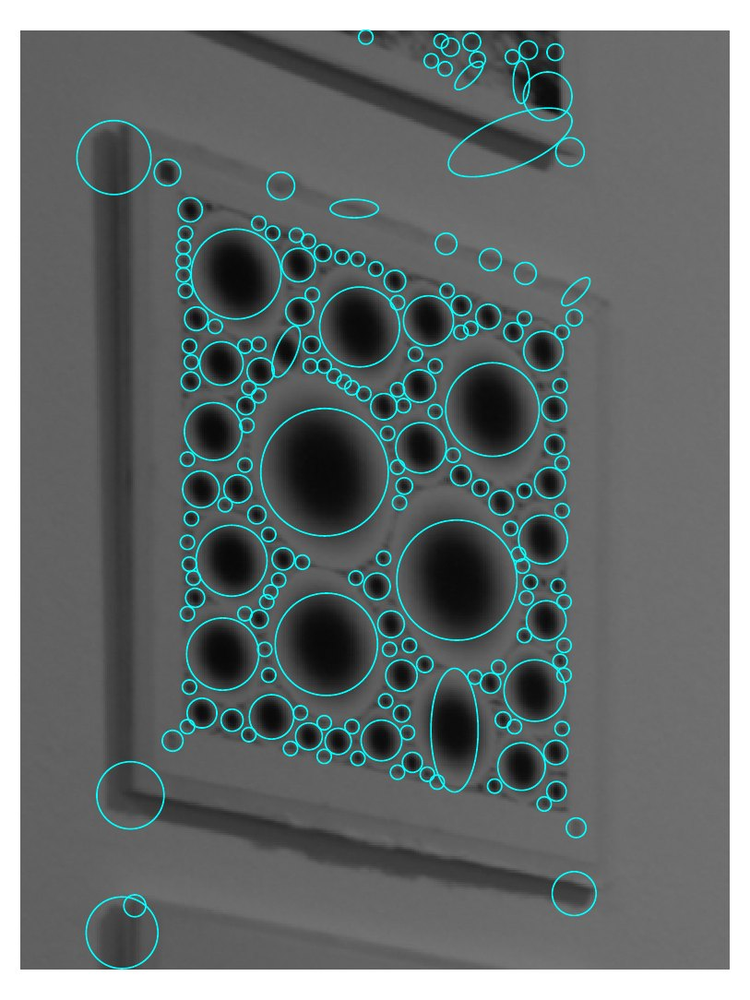
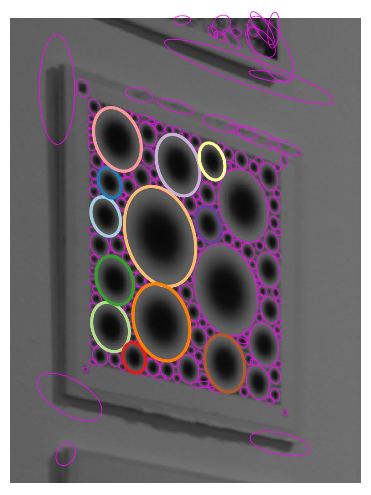
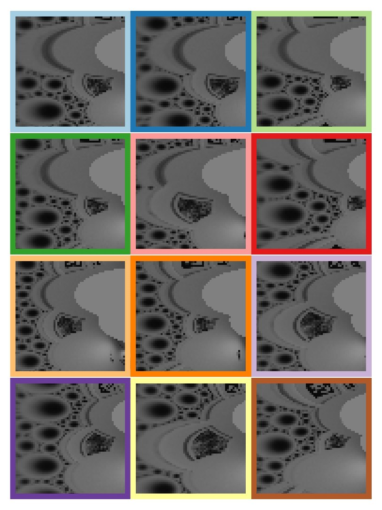
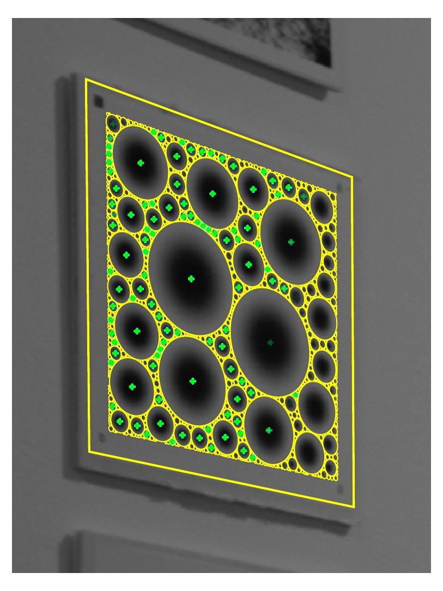
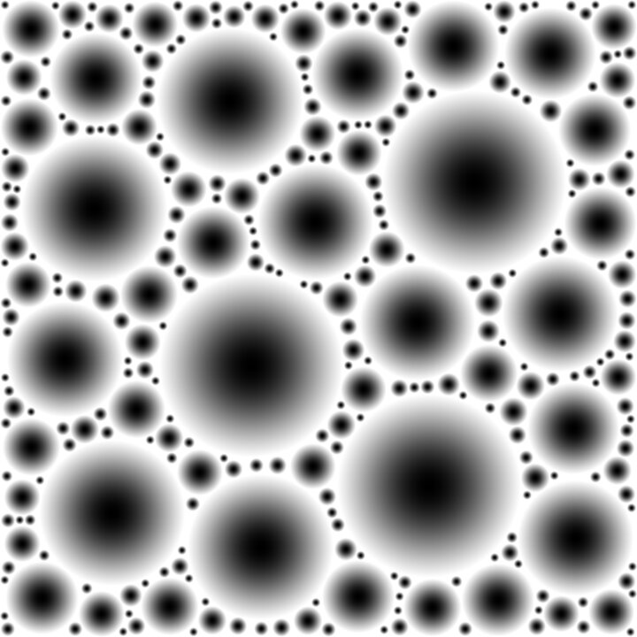
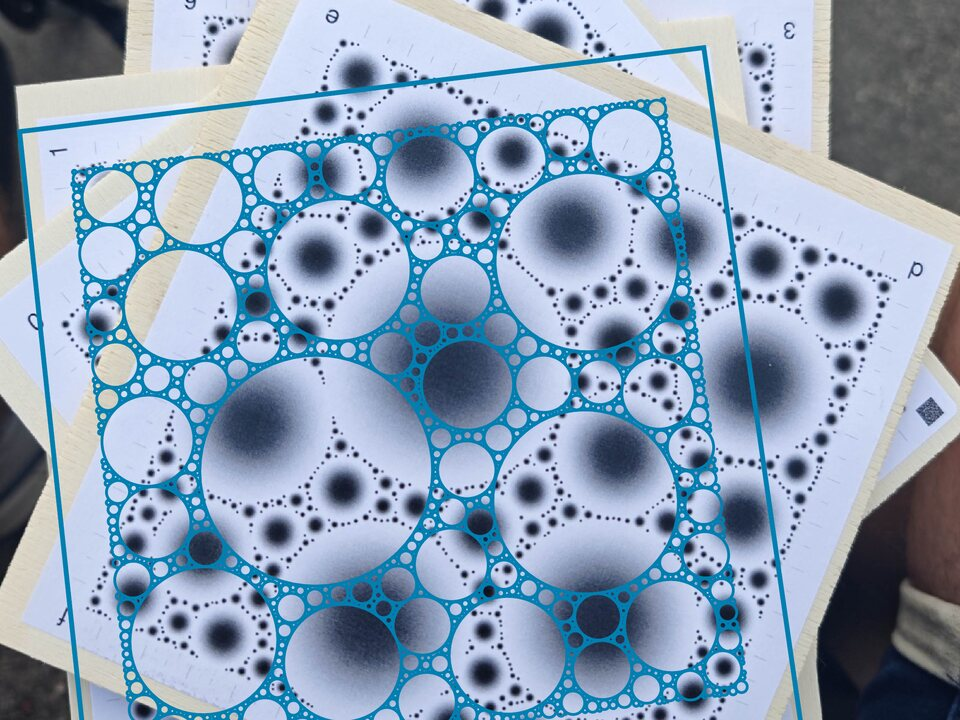
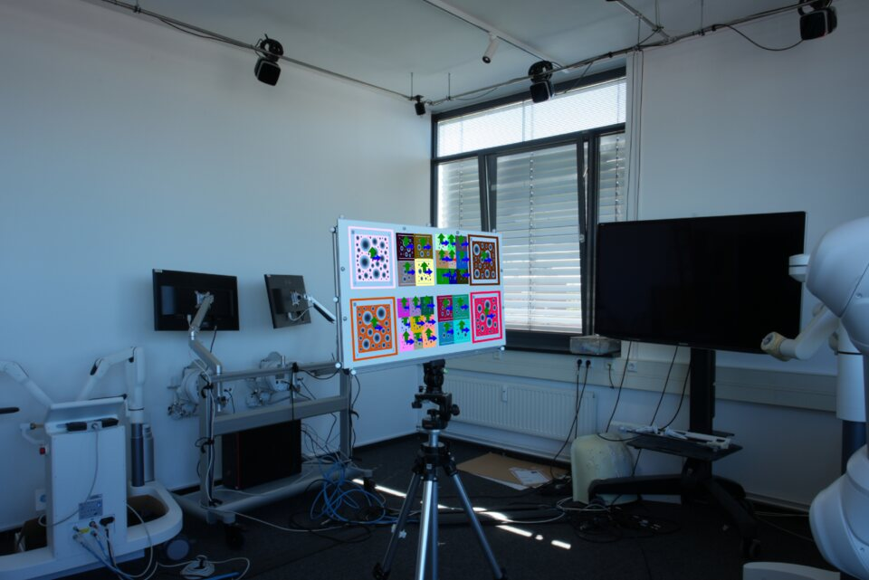
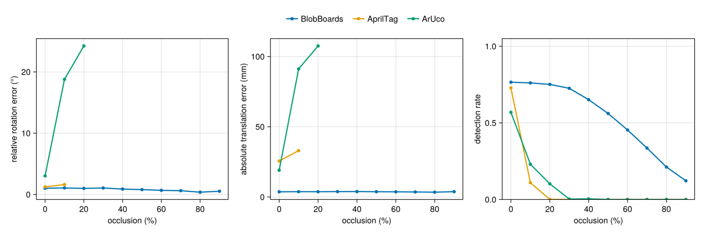
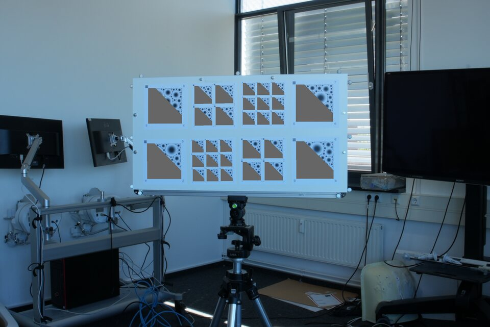

Deterministic multi-scale patterns
Patterns are rendered bit-exactly from a seeded PatternConfig. Blob scales follow a logarithmic distribution, so some subset of blobs is detectable at any viewing distance.
Robust Markers for Accurate Pose
We propose BlobBoards, a fiducial marker system comprising a dense, multi-scale field of Gaussian blobs and a feature-based pipeline for joint detection, identification, and pose estimation. Each board is registered from hundreds of blob features whose dense spatial coverage constrains pose, while multiple scales preserve detectability across large changes in focal length, distance, and obliquity. Learned local descriptors are matched to the reference pattern and spatially verified, so the correspondences determine pose and certify identity. Against motion-capture ground truth, BlobBoards achieve median translation errors of 3.6–5.0 mm, reducing AprilTag's median translation error by 89% on small boards and 70% on large ones. They also produce far fewer large-rotation failures than state-of-the-art tag systems. BlobBoards achieve the highest detection rate, 80% versus 74% for AprilTag and 58% for ArUco, with the largest margin on the smallest markers. Under 50% occlusion, they still detect 69% of boards with essentially unchanged median translation error, while AprilTag and ArUco detect none. In experiments BlobBoards give state-of-the-art detection rate, pose accuracy and occlusion robustness.
Pick a language and an install method to get the recommended command.
$
For manual setup (Julia 1.12+, Ghostscript) and the GPU environment, see the installation section of the README.
Everything from a seeded pattern to a verified board pose, in one package.
Patterns are rendered bit-exactly from a seeded PatternConfig. Blob scales follow a logarithmic distribution, so some subset of blobs is detectable at any viewing distance.
PDF boards with rulers, QR metadata, and a compact UID, specified in physical units (mm, inch, dpi) that are checked at compile time. Every board ships with a JSON sidecar that reproduces it.
find_boards detects blobs, fits elliptical frames, describes canonical patches, matches them against a board gallery, and estimates pose by P3P or homography — every board in the image, each verified by spatial consistency and by the appearance of its own inliers.
Detection, adaptation, canonicalization, and matching are written once against KernelAbstractions: threaded CPU by default, CUDA or any other KA backend by passing a device. Descriptors run through ONNX Runtime.
track_boards warm-starts each video frame from the last. build_tracks turns video with ground-truth homographies into .tracks files of canonicalized blob patches for training local descriptors.
The blobboards package wraps the Julia core through juliacall: patterns and boards come back as NumPy arrays and dataclasses, and physical parameters accept Pint quantities.
A board is registered from hundreds of blob features, not from four corners — that is where the accuracy and the occlusion robustness come from.
(a) detect

(b) adapt

(c) canonicalize

(d) match & verify




Against motion-capture ground truth, compared with AprilTag and ArUco on the same rig.


The sweep masks a growing fraction of every board on the rig, from 0% to 90% in steps of 10%, and re-runs all three systems on the same images. A tag system needs its full border to decode an identity and its four corners to solve a pose, so once the mask reaches a corner it fails outright. A BlobBoard is identified and posed from whichever of its hundreds of blobs are still visible: the detection rate declines gradually, and the boards that are found keep essentially the same pose error as the unoccluded ones.
Install BlobBoards using the selector above (pixi brings Julia, Python, and Ghostscript with it), or follow the manual setup.
Generate and print a board. The PDF is vector, carries rulers for checking the print scale, and comes with a JSON sidecar holding the full configuration and every blob's coordinates.
using BlobBoards
# A4 board at 300 dpi, smallest blob σ = 1 mm → board PDF + JSON in ./out
blob_board("A4", 300dpi; min_scale = 1.0mm, seed = 0xBEEF, dir = "./out")
# Or a pixel pattern for simulation and training
blob_pattern(800, 600; min_scale = 3px, seed = 0x1234, dir = "./out")Print at 100% scale; pass board_size if your printer scales the page.
Detect boards and estimate their pose. The bundled example runs both the calibrated (P3P) and uncalibrated (homography) paths on images fetched from Hugging Face through the package's artifact catalog — no dataset setup. It targets a CUDA GPU, so it runs from the dev environment; the pipeline itself defaults to the CPU.
julia --project=dev -e 'using Pkg; Pkg.instantiate()'
julia --project=dev examples/pipeline/find_boards.jlIn your own code the whole chain is one call:
accepted = find_boards(gray_image, boards, network;
board_bundles = bundles, config, device = CUDABackend())
for (uid, pose, _, _) in accepted
# pose.R, pose.t: board → camera
endPlease use the GitHub issue tracker for bug reports, questions, and feature requests. The examples directory has runnable Julia scripts for generation, detection, tracking, and building training tracks; python/examples covers the Python package.
BlobBoards is described in BlobBoards: Robust Markers for Accurate Pose, BMVC 2026 (PDF, with supplementary material). If you use this project for your research, please cite:
@inproceedings{pritts2026blobboards,
author = {Pritts, James and Sittart, Till and Sauer, Hendrik and
Jan{\ss}en, Silja and Seegr{\"a}ber, Felix and
Nakath, David and K{\"o}ser, Kevin},
title = {{BlobBoards}: Robust Markers for Accurate Pose},
booktitle = {British Machine Vision Conference (BMVC)},
year = {2026},
}The paper's LaTeX source, figures, and evaluation scripts live in bmvc2026/ in the repository.
BlobBoards is developed by James Pritts with Till Sittart, Hendrik Sauer, Silja Janßen, Felix Seegräber, David Nakath, and Kevin Köser at Marine Data Science, Kiel University.
James Pritts is funded by Kiel Training for Excellence, an EU Horizon Europe programme under the Marie Skłodowska-Curie Actions (MSCA), grant agreement No. 101081480. The motion-capture setup was funded through the project OP der Zukunft as part of the REACT-EU program and provided by the Kurt Semm Centre for laparoscopic and robot-assisted surgery at the University Hospital of Schleswig-Holstein.